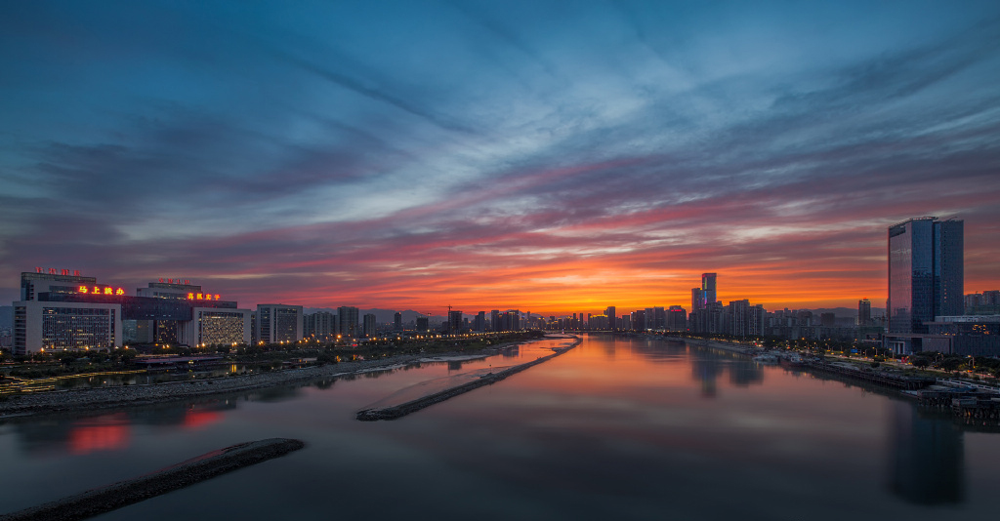
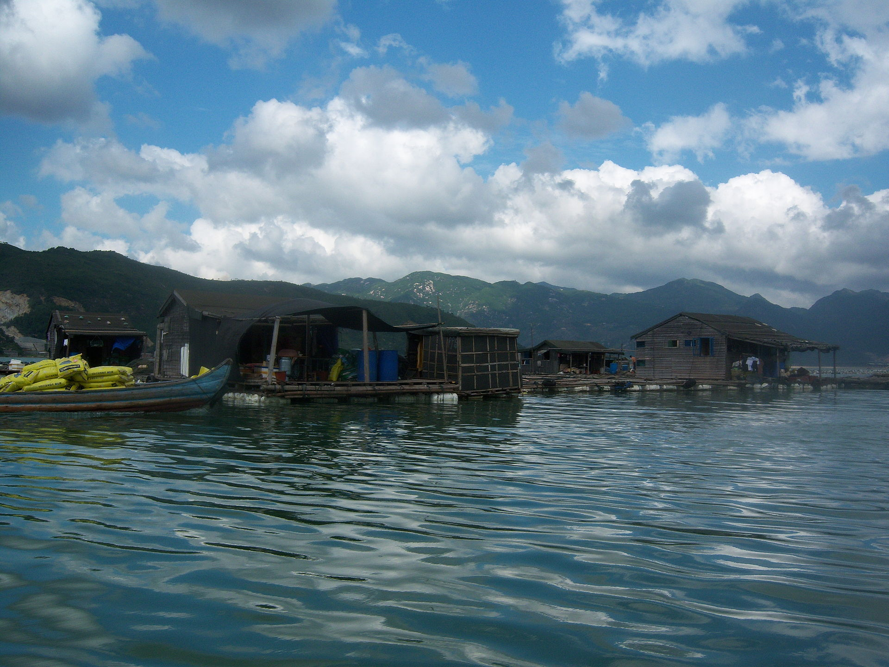
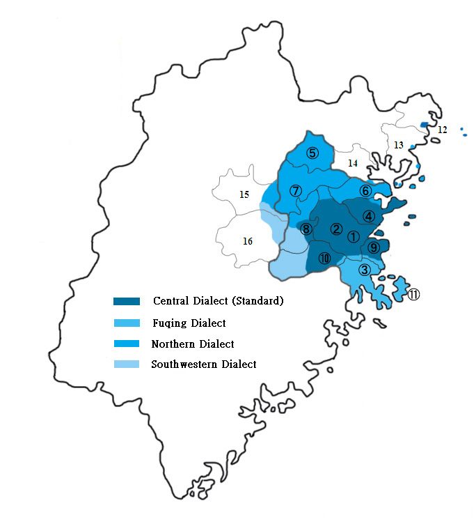

Introduction
Fuzhou is the capital city of Fujian Province, located on the southeast coast of China. With a history of more than 2,300 years, it is one of the most historically and culturally important cities in southeastern China.

Historically known as Rongcheng or the “Banyan City,” Fuzhou has long served as the political, economic, and cultural centre of Fujian. It was also one of China’s earliest coastal open cities.
History
Fuzhou’s origins can be traced back to the Minyue Kingdom in ancient China. During the Tang Dynasty, the city officially received the name “Fuzhou.”

306 BC
Establishment of the Minyue Kingdom.
725 AD
The city officially became known as Fuzhou.
909 AD
Capital of the Min Kingdom during the Five Dynasties period.
1844
Opened as one of China’s treaty ports after the Opium War.
1980
Became one of China's coastal open cities.
Geography
Fuzhou lies beside the Minjiang River and faces the Taiwan Strait. The city combines mountains, rivers, plains and coastlines.

Language
The traditional language of Fuzhou is the Fuzhou dialect, which belongs to the Min branch of Chinese languages.

Religion
Buddhism, Taoism and Christianity have all played important roles in the development of Fuzhou society and culture.
Modern Fuzhou
Today, Fuzhou is a rapidly developing international city, combining modern technology with deep cultural traditions.